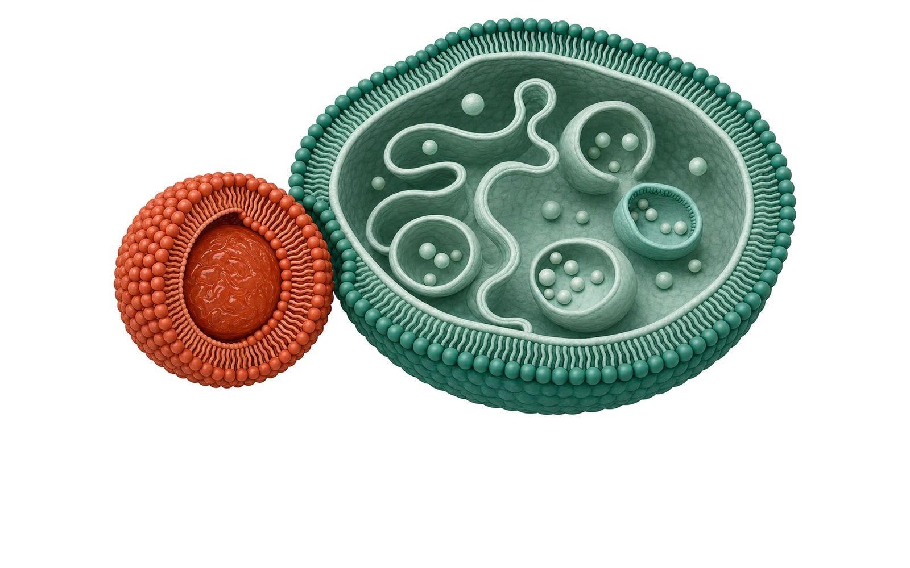
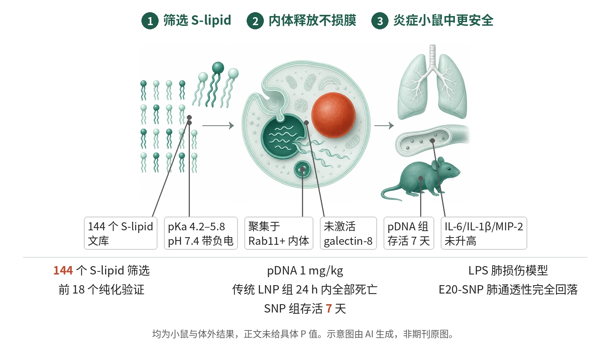

封面示意：左为剖开的赤陶色脂质纳米颗粒，右为剖开的绿色内体样囊泡（内含多个小泡），寓意 LNP 进入细胞后的内体环节。图片由 AI 生成，非原文图片。
LPS 预处理小鼠中，E20 可切换脂质纳米颗粒（SNP）未升高 IL-6、IL-1β、MIP-2，而 MC3-DLin、cKK-E12、SM-102 的 LNP 使其大幅升高。

- 筛选 144 个 S-lipid，取前 18 个验证
- SNP 在 pH 7.4 带负电，递送 mRNA/pDNA
- E20-SNP 未激活补体、TLR4、galectin-8、PAF
- LPS 预处理小鼠：IL-6 等未升高
- pDNA：LNP 组 24 h 内全死，SNP 组存活 7 天
示意图概括 S-lipid 文库筛选、SNP 在 pH 7.4 带负电并经内体释放 mRNA，以及在炎症小鼠中不加重炎症并缓解 LPS 肺损伤的过程。SNP 与传统 LNP 的对照来自小鼠与人 PBMC 实验。示意图由 AI 生成，依据原文结果绘制，非期刊原图，不代表分子比例
研究背景与待解问题
LNP–mRNA 复合物具备转染效率和组织趋向性，但在疫苗之外的临床转化因毒性而缓慢。毒性来自补体、TLR4、galectin 信号等多条炎症通路，LNP 还触发血小板活化因子（PAF）释放，在已有炎症的患者中更为突出。
难点在于离子化脂质的正电荷和破坏内体的能力既是毒性的主要来源，又是结合 mRNA、形成蛋白冠和触发内体释放所必需，传统 LNP 因而在毒性与递送效率之间折中。本研究（Nature Nanotechnology）设计头基含羧基和叔胺、在 pH 7.4 带负电的离子化脂质 S-lipid，用其制成的颗粒称 SNP，检验能否在保持递送的同时避开这些通路。
研究设计
这是临床前研究，包括体外筛选、小鼠和人 PBMC 实验。先合成 144 个 S-lipid，在 HEK 细胞中测荧光素酶 mRNA 转染（500 ng/ml，24 h，n=3），再将前 18 个纯化，在 HEK 细胞和原代小鼠成纤维细胞中验证。体内用 BALB/c 小鼠静脉注射：荧光素酶 mRNA 0.25 mg/kg（n=2），hEPO mRNA 0.1 mg/kg（n=3）。
核心比较是以代表分子 E20 制成的 SNP 对多种传统 LNP（MC3-DLin、SM-102、ALC-0315、4A3-SC8、cKK-E12）。LPS 预处理模型先给 LPS 1 mg/kg，4 h 后给 1 mg/kg mRNA，4 与 24 h 采血测细胞因子（n=3）。pDNA 实验每组 3 只，剂量 1 mg/kg；肺损伤模型气管内给 LPS 3 mg/kg，3 h 后给 IL-22 mRNA 2.5 mg/kg。样本量为每组 2–3 只或 4 名供者，未见按组间比较设计效能的说明；检验方法见图注。
核心结果
筛选与理化性质
144 个 S-lipid 的筛选显示，头基胺与羧基间需 6–8 个碳的连接链，并需分支疏水尾和内部间隔，具这些修饰者比线性尾者最高强 9,500 倍。前 18 个纯化分子中，11 个（61.1%）制成的 SNP 在成纤维细胞中的转染效率与 cKK-E12、SM-102 的 LNP 相当；其 pKa 为 4.2–5.8，zeta 电位比 MC3-DLin LNP 更负。
体内 mRNA 递送
前 18 个 SNP 在小鼠体内评估（荧光素酶 mRNA 0.25 mg/kg，n=2）中，5 个的递送效率等于或超过 MC3-DLin LNP，10 个有超过 80% 的信号来自肝脏。以 0.1 mg/kg hEPO mRNA 静脉给药，E20-SNP 使血液 hEPO 达 600 mU/ml，为治疗阈值的 100 倍，与 MC3-DLin LNP 相当。
LPS 预处理小鼠的炎症
在 LPS 预处理模型（n=3）中，MC3-DLin、cKK-E12 和 SM-102 的 LNP 使血清 IL-6、IL-1β 和 MIP-2 大幅升高，E20-SNP 未升高这些细胞因子，是唯一未加重已有炎症的 LNP。E20-SNP 组小鼠外观与未处理对照相近，LNP 组出现弓背、活动减少和眯眼。该读出在图 3f 用单因素 ANOVA 加 Dunnett 检验。
pDNA 毒性与人 PBMC
给予 1 mg/kg 纳米质粒 pDNA 后，MC3-DLin LNP 组小鼠全部在 24 h 内死亡；E20-SNP–pDNA 组无不适，存活整个 7 天观察期，并持续表达荧光素酶（每组 3 只，对数秩检验）。人 PBMC 实验（4 名健康供者，2,000 ng/ml）中，E20-SNP 转染高效且 14 种细胞因子均未诱导，MC3-DLin、4A3-SC8、ALC-0315、SM-102 和 cKK-E12 的 LNP 则诱导多种炎症因子。
LPS 急性肺损伤治疗
肺损伤模型中，E20-SNP 使肺通透性表型完全回落，肺内蛋白水平与健康小鼠相近，细胞浸润与未处理对照相近；MC3-DLin、SM-102、ALC-0315 和 4A3-SC8 的 LNP 组仍有蛋白渗漏和细胞浸润增加（各组 n=3，Tukey 检验）。E20-SNP 的 IL-22 mRNA 递送效率与传统 LNP 相当，另设 E20-SNP/mLuc 乱序 mRNA 对照组。
机制解读
原文实验证明：人血清与 E20-SNP（2,000 ng/ml，37 °C 1 h）后 C3a 未增加，阳性对照为 zymosan；TLR4 报告细胞中 E20-SNP 不激活 TLR4，阳性对照为 LPS，多种传统 LNP 则激活两者。galectin-8 报告细胞（1,000 ng/ml）中 E20-SNP 仅引起极少的 galectin-8 内体募集；人 PBMC 中不触发 PAF 释放，传统 LNP 对这两条通路均有激活。
低毒性并非转染不足所致：E20-SNP 在 galectin-8 报告细胞中的荧光素酶表达与传统 LNP 相近，pDNA 小鼠 7 天内荧光素酶信号持续。溶血实验中 E20-SNP 在 pH 5.5 无膜破坏性，传统 LNP 均有；Cy5-mRNA 示踪显示 E20-SNP 聚集于 Rab11+ 内体。
作者推测：作者推测，E20-SNP 经 Rab11+ 内体进入胞质而不激活 galectin-8 或 PAF，补体和 TLR4 的回避则归因于头基在 pH 7.4 带负电或中性；肺损伤中的优势很可能源于低免疫刺激而非递送差异。这些归因在正文所列实验中未经改变头基电荷等干预直接检验。
局限与不确定
- 作者未研究 S-lipid 的胞内代谢与蓄积，SNP 在慢性给药后可能因蓄积产生毒性；后续分子可能需在疏水尾加入酯键以加快清除。
- 样本量小：体内荧光素酶递送每组 n=2，pDNA 与多数小鼠实验每组 3 只，PBMC 为 4 名供者；pDNA 实验中 MC3-DLin 组 3 只全部死亡，无法采血，缺少该组血清细胞因子对照。正文未给出各比较的具体 P 值。
- 随访与范围有限：pDNA 仅观察 7 天，肺损伤仅在治疗后 24 h 分析；免疫毒性比较主要针对 E20 一个分子，其他 S-lipid 的细胞因子数据未在正文呈现；证据来自小鼠和体外人 PBMC，无人体数据。
临床/产业意义
若这些结果在更多模型中重现，头基在 pH 7.4 带负电的可切换离子化脂质，可能为需要高剂量、重复给药或用于已有炎症患者的核酸疗法提供一条降低 LNP 炎症毒性的途径，文中的 pDNA 递送和肺部炎症场景是其中两个例子。
目前证据仅限小鼠和人 PBMC，对照脂质包括 MC3-DLin、SM-102、ALC-0315 等。能否转化为人体用药，取决于胞内代谢与蓄积、慢性给药安全性，以及更大样本下对各炎症通路的复核。